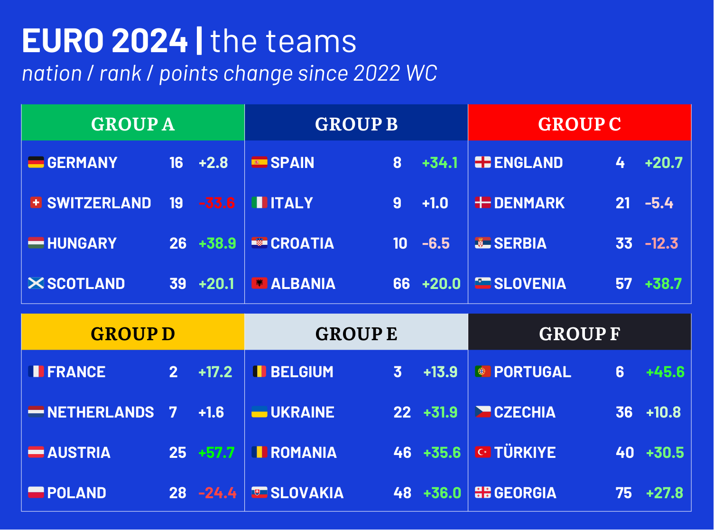
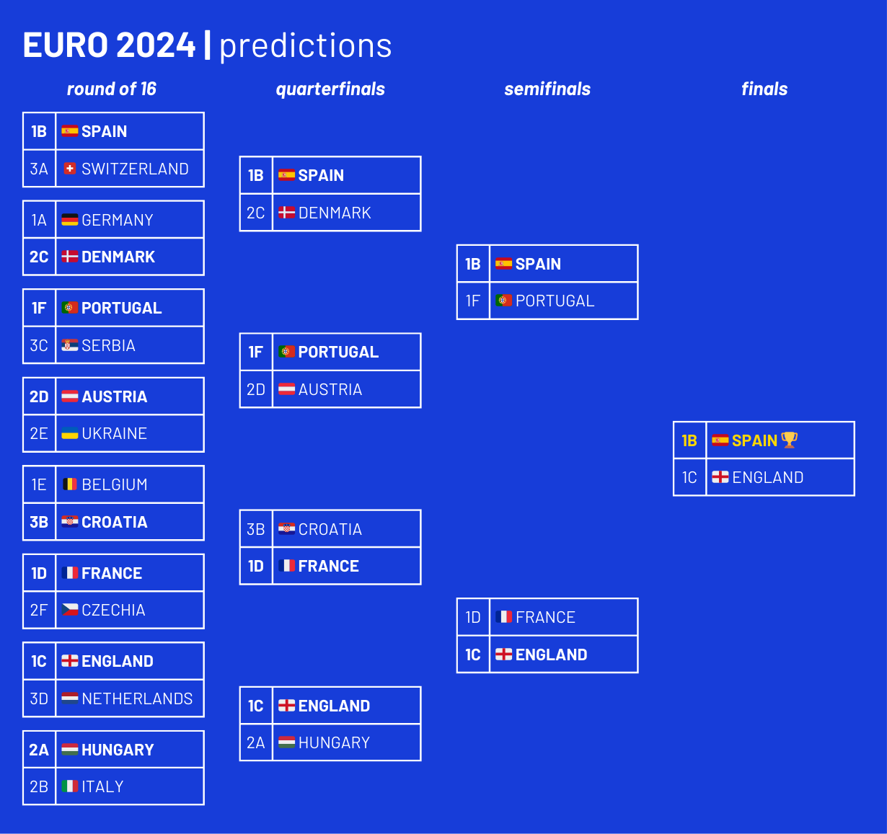

Euro 2024 begins this Friday when host nation Germany takes on Scotland, and what a tournament it is going to be. It's only been three years since Euro 2020 thanks to COVID, but just to recap, that tournament featured:
- Italy winning the championship against England at Wembley;
- The literal resurrection of Christian Eriksen;
- Switzerland sending France home in the round of 16;
- North Macedonia making their tournament debut;
- The France-Germany-Portugal group of death;
- Turkey's ill-fated dark horse campaign;
- Cristiano Ronaldo becoming the joint-top scorer in international football history;
- and the highest-scoring Euros in tournament history.
But a lot has changed since then. For one, Italy failed to even qualify for the World Cup, famously losing to North Macedonia. Russia are now suspended from international football, while Turkey changed their name to Türkiye. At the World Cup, France and Croatia came in second and third, with the Netherlands, England, and Poland making the quarterfinals. France and Spain took home UEFA Nations League titles, not that anyone noticed. And teams like Sweden and Wales failed to qualify for this competition after making the knockouts last time around.
All that said, here are my predictions for this edition's group stage and knockout rounds.
PICKING THE LOSERS
Because 24 teams will be taking part in the Euros for the third time, knockout stage matchups will actually depend quite a bit on the worst teams. This is due to the fact that the 16-team knockout round will only exclude eight teams: two third-place teams and all of the last-place nations. So instead of going straight into the group rankings, I'm going to pick two groups that I think will fail to send three teams to the round of 16.
Looking back at Euro 2020, the two third-placers that got bounced before the knockout round, Finland and Slovakia, both finished on three points and had goal differentials of -2 or worse. This left them behind Ukraine, who also finished on three points but had a goal differential of -1. The recipe for third-place failure seems to be groups where two teams beat down on the other two, or at least leave them sufficiently adrift of the other third-placers. This was the situation with Euro 2020's Group B, where Belgium and Denmark were much better teams than Finland and Russia. Denmark scraped through with just three points, but that was only because they lost to Finland in the match where Eriksen collapsed, which under normal circumstances probably would have been a Danish win. Russia, who would have finished third if not for that result, lost big to Denmark in the final match, 4-1.
In Group E, meanwhile, Slovakia got mauled by Spain, losing 5-0; their win against Poland was far from enough to get them through. On paper, this group should have been closer, with Sweden and Poland matched about evenly in the FIFA rankings, but even with Slovakia winning, Spain's potential for goals (they subsequently scored five against Croatia in the round of 16) played a huge part in Slovakia's inability to make it to the knockout stage.
I think there are two clear groups in this year's tournament that should only yield two knockout stage teams. The first is Group E. Belgium and Ukraine (3 and 26) are ranked much higher by FIFA than Romania and Slovakia (46 and 48), and Ukraine and Romania are even further apart by Elo. Romania and Slovakia have two of the least valuable squads in the tournament, per Transfermarkt estimates, while Belgium and Ukraine could have top-10 starting lineup values. Picking both Romania and Slovakia to go home early seems like a safe bet.
There's also the ridiculously imbalanced Group F, where Portugal (ranked 6th by FIFA) is far and away the best team on paper. Czechia, Türkiye, and Georgia are all ranked at least 30 places below Portugal, with Georgia being the lowest-ranked team at the tournament (75th). Georgia actually finished with just eight points from eight qualifying matches, only making the tournament through the Path C playoff tournament against Luxembourg and Greece. Their debut at the Euros is obviously a good story, but it'll probably come to a quick end here. Still, with both Czechia and Türkiye ranking among the bottom eight teams at the tournament, I don't think they'll beat Georgia by enough to balance out losing to Portugal.
As for which team makes it out of those two, we'll come back to that later. For now, we have our third-place matchups: 1B versus 3A, 1C against 3D, 1E versus 3B, and 1F against 3C. This will come into play later with the construction of the bracket.
THE GROUP STAGE
GROUP A
This might be the group with the least tournament potential. Hosts Germany, the top-ranked team in the group at 16, are the only prospective group favorites at the tournament to be ranked below 8th. Switzerland, Hungary, and Scotland round out the group, and their similarly middling statures could make this group very interesting. Germany haven't really improved since the World Cup, but Switzerland are on a clear downhill trajectory. They have the biggest point decrease of any team since then (-33.6), and they finished second in their group to Romania. It's the opposite story for Hungary, who made the second-biggest gains since the World Cup (+38.9) and won their group. Scotland have also improved, but remain further back in the rankings.
Given Germany's home-field advantage, I'm going to pick them to win the group. It's almost a toss-up between the other three, but I'm taking Hungary second and Switzerland third, with both advancing. Hungary may come as a surprise, but the Magyars have been pretty reliable recently. Even though their squad isn't as impressive as some of the others in this tournament, this is definitely a team that can progress to the next stage, following their tenacious display at Euro 2020. As for Switzerland, according to Opta Analyst, they've made the knockout stages in the past five international tournaments, and I think they'll manage to maintain that streak. Scotland will be left waiting once again.
Prediction: Germany, Hungary, Switzerland, Scotland
GROUP B
Let's just say this is a very unfortunate group for Albania. Every other team in Group B is ranked top 10 in the world by FIFA, while Albania are… 66th. They did actually win their qualifying group, but they should nevertheless comfortably finish last in this group.
I also think there's a gap between Spain and the other two teams. Spain have been on a tear as of late, winning the Nations League and their qualifying group, all while regularly putting five goals past lesser opponents. With players like Rodri, Pedri, and Lamine Yamal, they have some of the most promising talents at the tournament, part of a strong squad all around.
Italy and Croatia are closer. This isn't the same Italy squad that won Euro 2020: key players from that run, like Leonardo Bonucci, Giorgio Chiellini, and Ciro Immobile, are no longer part of the team. But players like Nicolò Barella and Federico Chiesa will be looking to go far in this tournament. Croatia still have Luka Modrić, Mateo Kovačić, and Joško Gvardiol, among others from their 2022 World Cup run. However, both Italy and Croatia finished second in their qualifying groups, behind England and Türkiye respectively. Ultimately, I think Italy will have a slight edge in talent, so I'll put them second behind Spain.
Prediction: Spain, Italy, Croatia, Albania
GROUP C
Slovenia are making their second appearance at the Euros after 24 years, and in a group with three World Cup teams, they should be overmatched. They finished second in their qualifying group, level on points with first-place Denmark, who are also in this group. Rounding out the group are Serbia, fronted by the strike of Aleksandar Mitrović and Dušan Vlahović, and one of the favorites in England, who will have the most valuable squad at the tournament.
England should win the group comfortably, having won a tough qualifying group and possessing talents like Harry Kane and Jude Bellingham. Denmark and Serbia have slipped a little recently, but I'm giving Denmark a better chance to recreate some of the magic of their Euro 2020 run with their arguably superior defense. Serbia should still qualify in third, given the quality in their squad. Both Denmark and Serbia will be tough opponents for England.
Prediction: England, Denmark, Serbia, Slovenia
GROUP D
It's hard to have a true group of death in a tournament where three teams can qualify from a group, but this might be it. You've got France, who have gold and silver medals from the last two World Cups. You've got the Netherlands, ranked 7th in the world, who joined France in losing to Argentina on their World Cup run. Austria and Poland, both ranked in the top 30 worldwide, round out the group. Poland lost to France in the World Cup round of 16, while Austria are the hottest team in Europe, gaining 57.7 points since the World Cup by FIFA's system.
Obviously, I'm picking France to win the group. They're the highest-ranked team in Europe and already beat the Dutch twice in their qualifying group. The next-clearest decision, in my view, is predicting the Poles to finish last. They finished third in their qualifying group behind Czechia and Albania, infamously losing to Moldova in the process. These poor results are also reflected in the fact that no tournament team outside Switzerland has lost more FIFA points (-24.4) since the World Cup. I'm doubtful that they'll be able to turn it around in a group like this.
You might look at the rankings and think the Netherlands are clear-cut favorites over Austria. But Austria are firmly my dark horses for the tournament, and the key to that is manager Ralf Rangnick. The father of gegenpressing turned down the Bayern Munich job to lead Austria at the Euros, and he's achieved some impressive results during his tenure as manager. Austria are unbeaten since October, with wins over Germany, Türkiye, and Serbia. Elo has them just five spots behind the Netherlands, who do have a very good squad but could still be caught out by Rangnick-ball. Maybe this is a little vibes-based, but the Dutch have somehow not made the quarterfinals at the Euros since 2008. I'm predicting their bad luck will continue, since a third-place result means they run into England in the round of 16.
Prediction: France, Austria, Netherlands, Poland
GROUP E
Having already eliminated Romania and Slovakia, the question is whether Belgium or Ukraine will take the group. Like Austria and Hungary, Ukraine fits the mold of a pretty good team that's also been climbing up the ranks recently. But even though the Belgian golden generation might be on its last legs, I think they'll take the group. I think their FIFA ranking of 3rd is too high, but they did win their qualifying group, while Ukraine came in third, albeit to two good sides in England and Italy. Belgium are sneakily unbeaten since the World Cup, and I think they'll continue that streak in this group.
Prediction: Belgium, Ukraine, Slovakia, Romania
GROUP F
Portugal have an absolutely stacked squad from top to bottom, and they should win this group easily. Georgia, meanwhile, are pretty much Khvicha Kvaratskhelia and vibes. I've already said the third-place team in this group isn't going to make it out, and that team is going to be Türkiye. That leaves Czechia to finish second, and while they aren't on the best form, they're still led up front by Euro 2020 top scorer Patrik Schick. I think he can get a few more goals following his title-winning season with Bayer Leverkusen.
Prediction: Portugal, Czechia, Türkiye, Georgia
THE KNOCKOUT STAGE
ROUND OF 16
The round of 16 is often the most fun round of a tournament because of the numerous opportunities for upsets. And as we saw during Euro 2020, teams with something to prove can seize on those opportunities. While the group stage was pretty chalky, there were three instances in which teams that finished first in their group lost to teams that finished third. France fell to Switzerland, Sweden lost to Ukraine, and the Netherlands were defeated by Czechia. All three third-placers lost in the quarterfinals, but it was certainly impressive that they got there. Going further back to Euro 2016, Portugal actually won the tournament after finishing third in their group behind Hungary and Iceland. And Iceland made the quarterfinals too, famously winning 2-1 against England. Upsets are possible.
I'm gonna go bold. I'm predicting four upsets by the FIFA rankings, one of which would be classified as a major upset.
First up, though, Spain against Switzerland. I think Spain will sweep away the Swiss with ease. Spain are a better team than any Switzerland will face in their group, and I know Switzerland beat France last year, but I'm not seeing it again.
Denmark over Germany is my first upset. The Danes can't really send the Germans home since the tournament is in Germany, but the hosts will make an early exit. In Euro 2020, it was the Netherlands that won the group with the least potential, and they lost in the first round. I'm predicting the same thing to happen to Germany. These teams aren't all that far apart in the rankings, with Germany 16th and Denmark 21st. But since the World Cup, Germany's record is 5 wins, 3 draws, and 5 losses. I'm taking Denmark to make that loss count 6.
Next, I'm taking Portugal over Serbia. Portugal are actually the hottest top team coming into the tournament, gaining 45.6 FIFA points since the World Cup. They were the only team to go perfect in qualifying, winning all 10 matches while scoring 36 goals and conceding just two. Serbia, meanwhile, have lost the third-most points in that same period. Give me Portugal.
Austria-Ukraine is a great tie, since both teams would be really happy with a quarterfinal spot. Ukraine might actually have a top-10 squad at the tournament by valuation, with players like Oleksandr Zinchenko, Artem Dovbyk, Mykhailo Mudryk, and Andriy Lunin. But I'm rolling with my dark horses in Austria, ranked just three spots behind the Ukrainians. Both of these teams are ranked in the top 20 by Elo, so they're better than the FIFA rankings might suggest.
Croatia is the one third-placed team I'm betting on to make it to the quarterfinals. I think they have a shot to turn it on in the knockout rounds (like they do at the World Cup), which spells trouble for Belgium. Belgium have a history of capsizing at tournaments, and I think that history will continue against Luka Modrić and company.
France should beat Czechia easily. I don't want to consider the alternative.
England against the Netherlands is the spiciest round of 16 matchup, with both sides ranked in Europe's top five. A battle like this could go either way, but I think England will continue their streak of strong tournament runs by defeating the Dutch. I'm excited to see this team cook up front.
And last but absolutely not least, the biggest shock of the tournament: defending champions Italy falling to upstarts Hungary in the round of 16. I'm sensing big upset potential for the Italians. Again, these teams aren't as far apart as one might think, with Italy 12th and Hungary 18th by Elo. Hungary haven't made the quarterfinals of the Euros in fifty years, but why not now? (To be honest, I partly just think the England-Italy finals rematch – which would happen if Italy won – simply will not come to pass.)
Prediction: Spain, Denmark, Portugal, Austria, Croatia, France, England, and Hungary to the quarterfinals
QUARTERFINALS
This is where I think it gets chalky. I picked four group winners and four non-group winners to make it to the quarterfinals. I'm picking every group winner to win in this round.
Spain over Denmark is a battle of the two Euro 2020 semifinal losers. I think Spain will have too much quality for the Danes, whose tournament performance might be very dependent on whether Rasmus Højlund can turn it on for the tournament. Spain have a lot of talent up front and in midfield. I expect the goals to flow for them this tournament.
Unfortunately, I think this is where the Cinderella run ends for Austria, with Portugal advancing to the quarterfinals to set up an all-Iberian semifinal. This is a team with Bernardo Silva, Rafael Leão, Bruno Fernandes, Rúben Dias, and much more. Oh yeah, and they still have Cristiano Ronaldo up front. Keep it coming.
France-Croatia is a rematch of the 2018 World Cup final. Croatia's relative letdowns at the Euros should continue, with France advancing to the semifinal. Newly minted Real Madrid player Kylian Mbappé will cook the Croatian backline en route to a matchup with…
England. Incredibly, this is a team that has actually been outscored 6-1 by Hungary in their past three meetings, but I don't see the English as vulnerable to this kind of upset in the same way as Italy before them. Maybe this is when they start to believe that it might be coming home.
Prediction: Spain, Portugal, France, and England to the semifinals
FINAL FOUR
Well, here we are. Spain vs. Portugal and France vs. England, two heavyweight fights with proximity at play. These teams are all ranked top 10 in the world, none in bad form, so there's not much to separate them. That being said, I'm picking Spain to beat Portugal and England to beat France. Do I have a good reason for this? Not really. But I think Spain have what it takes to make the final for the first time since they won in 2012. Interestingly, England and Spain will likely have the two most valuable midfields at the Euros by Transfermarkt valuation. My hypothesis is that they'll shine all the way to the tournament final.
Am I picking England to beat France only to lose the final partially because I think it would be funny? Yes. But the margins are so thin here that no result would be a massive surprise. England last met France in their World Cup quarterfinal, in which France prevailed; I think England will get their revenge this time around. And maybe Harry Kane will secure another top scorer award in the process.
But my pick to win it all is Spain. They're a highly-ranked team with a recently stellar record and a trophy from the Nations League to boot. Luis de la Fuente's side could very well take home the silverware, which would make Lamine Yamal the youngest Euros winner ever (how was he born in 2007??) and deliver Spain their third Euros title in the last five editions.
For now, though, all we can do is wait and see. Will Spain be victorious on July 14? Will they even be playing then? Whatever happens, it all kicks off on Friday at 9 pm in Munich.
Prediction: Spain over England in the final ∎
Do you agree with these predictions? Let me know at productionsbypvp@gmail.com.
Some methodology notes: my estimates of team valuations come from the predicted starting lineups in this video, combined with player valuations from Transfermarkt. Rankings and ratings come from the December 2022 list here, current FIFA rankings here, and Elo ratings here. The leading image is from here.
I was going to combine the valuation estimates in full with the FIFA ranks and point changes I included in the first graphic, but ultimately only used these as reference material. You can find that original methodology here. In this spreadsheet, I came up with a score for each team, weighted by their offensive and defensive player valuations, FIFA rank, and FIFA points change since the World Cup. Midfielders were split between offense and defense such that there would be the equivalent of five outfield players in both groups. Portugal, France, Spain, and England were the favorites by this metric, the same as my final four. But all we can do now is watch!